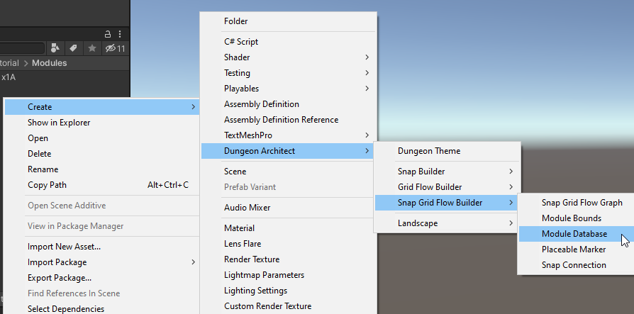
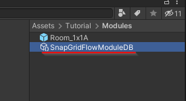
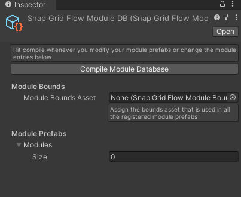
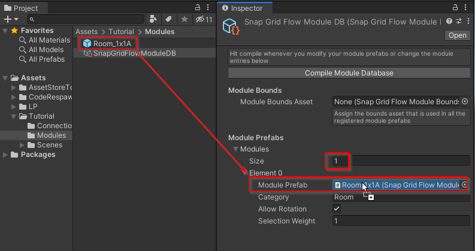
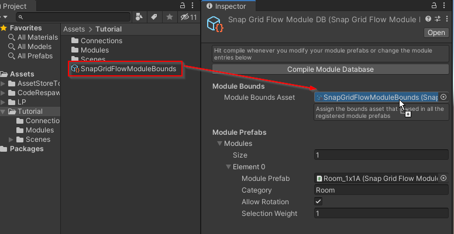

A Module Database is a registry of all the available modules that Dungeon Architect can use to stitch the dungeon
It also contains an acceleration structure with all the necessary information pre-calculated in the editor, so the stitching is fast at runtime
You may have different module databases to generate dungeons with different art styles (e.g. Sci-Fi spaceships, Medieval castles etc)
Create a Module Database
We'll create a new module database asset and register the module that we created in the previous sections
Move to an appropriate folder and create a module database from the Create menu:

Select the module database and inspect the properties

Register your modules in the Modules array

You'll also need to provide the bounds asset that is used in all of the registered module prefabs

Finally, Click Compile Module Database whenever you make any changes to either the module or the module database. This will do some internal calculations in the editor so your dungeons can build fast at runtime